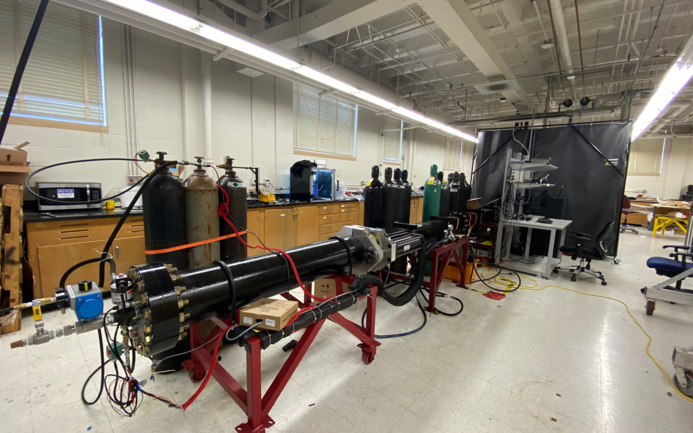
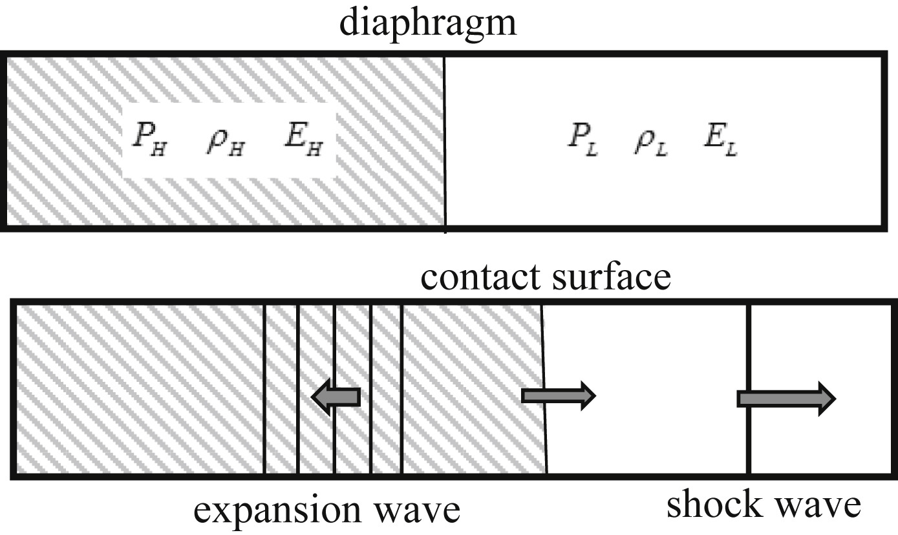

1D Shock Tube/Riemann Problem
The default conditions of this web app are set up to match the Sod shock tube validation case at 0.2 seconds. I have put some common-sense limits on the inputs, but I can't guarantee every run will be perfectly smooth. This solver is not extensively verified or validated, so all results should be taken as qualitative. Enjoy!
Left State
Domain Settings
Right State
x-t Diagram
Density
Pressure
Velocity
How to Use ↓
Just a heads up: in order to see a new run or apply any changes you made to the inputs, you have to hit "Reset" first.
To get started, just plug in your initial values for the left and right states in the panels at the top. You can mess with the density, pressure, velocity, gas constant, and even the boundary conditions to see how different conditions change the shock behavior. I have put some common-sense limits on these inputs to keep the math stable, but this hasn't been exhaustively tested! Weird things may happen if you push the values to the extremes, and I would appreciate any abnormalities being reported to me through my email.
Once you have your initial conditions set up, hit "Start" to watch the simulation evolve in real time. If you want to see exactly what is happening at a specific moment, "Step Forward" lets you go frame-by-frame. You can also use the "time-travel" feature by clicking anywhere along the y-axis (Time) of the x-t diagram to jump the snapshots of the line graphs straight to that point in history.
If you keep all the inputs at their default settings, a black dotted line will pop up on the graphs once you hit 0.2 seconds. That is the exact analytical solution for the Sod shock tube, which is what the default initial conditions are set to, so you can see how well this numerical scheme actually holds up against the math!
What is this? ↓

The FMECL shock tube at Texas A&M at my graduate school lab. [Source]
The Riemann problem is a specific type of partial differential equation initial value problem, which normally includes a conservation law with piecewise constant initial data and a single jump discontinuity. This nicely manifests physically as a "shock tube" problem, where a shock wave is driven through a tube filled with gas in two different states. These two states are the high pressure "driver" section and the ambient or low pressure "driven" section. They are named as such because the conditions of the driver section drive the shock through the tube. In a physical lab, you would have a long tube with a diaphragm in the middle separating a high-pressure gas from a low-pressure gas. When that diaphragm bursts, you get the resulting shock wave problem. This problem, in its simplest form, is a very common test case for codes to validate their methods and how they handle discontinuities.

A diagram of the shock tube/Riemann problem, the left side would be the driver and right would be the driven. [Source]
This setup creates three main features that you can see moving across the x-t diagram:
- The Expansion Fan (Rarefaction): A series of waves moving back into the high-pressure side that smoothly lower the pressure.
- The Contact Discontinuity: The boundary between the original "left" and "right" gases. The velocity is constant across it, but the density and pressure jump at this point.
- The Shock Wave: A sharp, thin front moving into the low-pressure side that causes a sudden spike in density and pressure.
In 1978, Gary Sod published a specific set of initial conditions, the same ones this site initializes to, that became the gold standard for testing numerical methods. Because an exact mathematical answer exists for this problem, it is often used as a showcase, and those who are familiar with the problem enjoy pointing out the intricacies in it.
Methods ↓
Plain English Overview
To make this work on a computer, we equally divide the tube domain into tiny boxes called cells. Each cell tracks its own density (rho), velocity (u), and pressure (P). We then apply the Euler equations to solve for the fluid dynamics. These equations describe the fundamental laws of physics of how a fluid moves when there is no friction or viscosity.
The Riemann Problem
At every boundary between two cells, we have what is called a Riemann problem. The solver's job is to calculate the net flux (the flow of mass, momentum, and energy) across the boundary of two cells by assuming a specific wave pattern forms when the cells are at different states.
The HLLC Wave Structure
This app incorporates the HLLC (Harten-Lax-van Leer-Contact) method. While older solvers only assumed two waves moving outward, they often "smeared" the results because they ignored the physics happening in the center. HLLC fixes this by tracking three specific waves. Assuming the setup is similar to the Sod shock tube, the three waves are:
- SL: The equilibration wave moving to the left of the original interface.
- SR: The shock wave moving to the right into the unshocked fluid.
- SM: The contact discontinuity in the middle which describes the original interface.
This creates four distinct regions in the flow. The "C" in HLLC is the novel contribution of the developed method. By explicitly accounting for the middle contact wave, the solver can keep the density jump sharper instead of letting the "left" and "right" gases blur together over time.
Stability and Visualization
To keep the simulation from becoming unstable, we use a safety factor called the CFL Condition. This calculates a speed limit for the time steps. If a wave moves faster than the grid can track, the code will crash. So we keep the CFL number below 1.0 to mitigate this.
Finally, we plot everything on an x-t diagram. This lets you see the whole history of the waves at once. Position is on the bottom and time is on the side, so diagonal lines show you exactly how fast the shock and expansion waves are traveling through the tube. You can also see the trace graphs of pressure, density, and velocity over time as well. These help describe the instantaneous state of the domain by acting as a measurement through all the cells.
Resources ↓
- Wikipedia page for the Sod shock tube
- Wikipedia page for the Riemann problem
- Wikipedia page for the Euler equations
- Wikipedia page for Riemann solvers
- Original technical paper for the HLLC solver
- Toro's textbook on Riemann solvers and numerical methods
- WiSTL shock tube calculator using a method of characteristics approach, use this for more rigourous results.
- Facility page for the FMECL shock tube at TAMU
- Book chapter on high order the Riemann Problem and discontinuous solution methods.
- Source of one of the images used in the description of this app
- Sod's original 1978 validation paper
- Lecture notes on the Riemann problem and solvers
- Handbook of numerical analysis chapter on Riemann solvers by Toro
- YouTube video on x-t diagrams for shock tubes